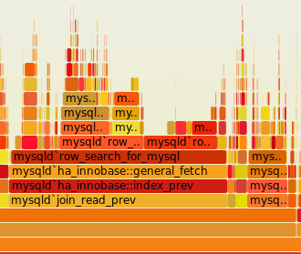

Performance Tools & Tricks
for server and client
Maurice Butler (@butlermaurice)
Kory Nunn (@korynunn)
Client Stuff
Don't use jQuery
Server Stuff
Don't use express
THE END
Maurice Butler (@butlermaurice)
Kory Nunn (@korynunn)
Do less
Don’t iterate so much
for(var key in obj){
if(!obj.hasOwnProperty(key)){
continue;
}
// Do something.
}
var keys = Object.keys(obj);
for(var i = 0; i < keys.length; i++){
// Object.keys only returns own properties.
// Do something.
}
Memoisation
function isPrime(n) {
if (isNaN(n) || !isFinite(n) || n % 1 || n < 2) {
return false;
}
var m = Math.sqrt(n);
for (var i = 2; i <= m; i++) {
if (n % i === 0) {
return false;
}
}
return true;
}
var cache = {};
function isPrimeMemoised(n) {
if(n in cache){
return cache[n];
}
if (isNaN(n) || !isFinite(n) || n % 1 || n < 2) {
return cache[n] = false;
}
var m = Math.sqrt(n);
for (var i = 2; i <= m; i++) {
if (n % i === 0) {
return cache[n] = false;
}
}
return cache[n] = true;
}
Results
~100% faster for the same number. jsperf.com/primes-memoisationGood for
Repeated, deterministic, hard calculations.Bad for
easy calculations.Impossible for
non-deterministic code.Reuse objects
function onMouseMove(event){
$('.someUniqueElement').left(event.pageY);
$('.someUniqueElement').top(event.pageY);
}
var someUniqueElement = $('.someUniqueElement');
function onMouseMove(event){
someUniqueElement.left(event.pageY);
someUniqueElement.top(event.pageY);
}
Flame Graphs

Brendan D. Gregg (@brendangregg) is a legend at this stuff
All you need to know about Flame Graphs is here brendangregg.com/flamegraphs
Flame Graphs are a visualization of profiled software.
- The x-axis is sorted alphabetically (not the passage of time)
- The y-axis shows stack depth
- Each box represents a stack frame
- The top edge shows what is on-CPU
- Below is its ancestry
- The colors are random...
Prerequisites to generate flame Graphs
- Use linux ( mac is hard, windows impossibru... )
- Use node v0.11.13+ ( for symbols )
- Clone the FlameGraph repo (github.com/brendangregg/FlameGraph)
DEMO
ACTUALY THE END
Maurice Butler (@butlermaurice)
Kory Nunn (@korynunn)